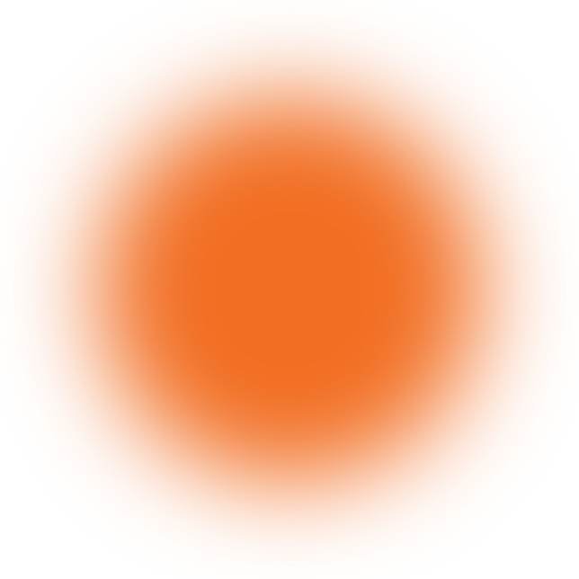
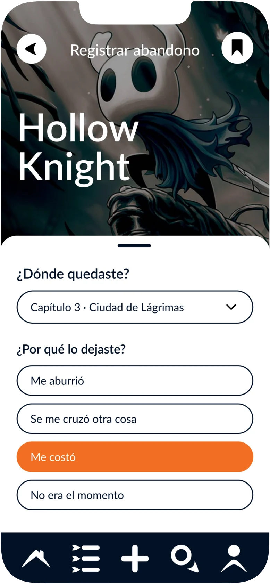
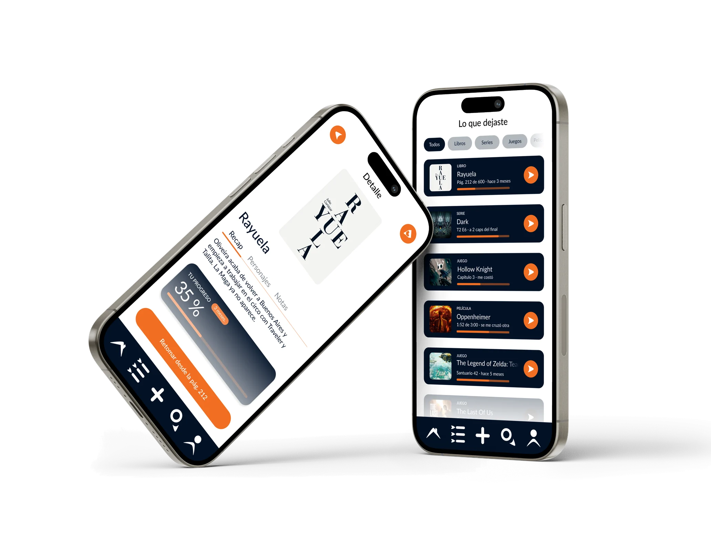

01 · DEJÁS
El punto exacto
y el motivo real
Me aburrió, me costó, se me cruzó otra cosa. El motivo importa tanto como la página.
4 formatos · 1 biblioteca
Retomá guarda en qué página, capítulo o minuto quedaste y por qué lo dejaste. Cuando vuelvas, te devolvemos el contexto justo para seguir.
EL PROBLEMA
Nadie recuerda en qué página quedó, en qué capítulo se bajó ni por qué lo dejó. Volver cuesta tanto que terminás empezando otra cosa.
73 %
De los libros empezados
no se terminan
4 Libros
Pausados por cada
persona activa
3 meses
es el promedio antes de abandonar un libro, serie y juego
CÓMO FUNCIONA


01 · DEJÁS
Me aburrió, me costó, se me cruzó otra cosa. El motivo importa tanto como la página.
02 · ESPERA
Con su progreso y el tiempo que pasó. Sin notificaciones que te persigan.
03 · RETOMÁS
Un recap de lo que venías leyendo o viendo, sin spoilers de lo que falta.
RECAP ANTES DE VOLVER
Una línea de tiempo de lo que ya leíste, los personajes que importan y dónde quedaste exactamente. Nada más que eso.

SOLTAR TAMBIÉN VALE
Somos la única app que te deja archivar algo en paz.
Si un libro no era para vos, queda como una decisión
y no como una deuda.
Guido F.
Lector · 32 libros
“Tenía Rayuela parado hacía un año. El recap me devolvió la trama en dos minutos y lo terminé en tres semanas.”
Elias E.
Seriéfilo · 18 series
“Lo mejor es poder soltar una serie sin sentir que fallé. Archivé cuatro y me saqué un peso de encima.”
Rebeca B.
Gamer · 12 juegos
“Volví a terminar juegos que había dejado en 2022. Saber en qué santuario quedé cambia todo.”